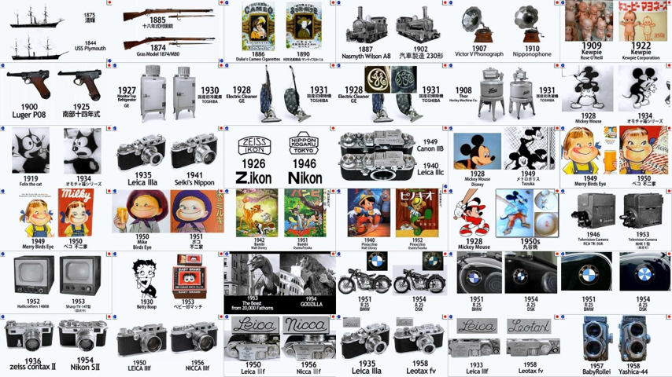

Suxiangang Youth Park
Location: China
Category: Parks and recreation
Nonhuman: -

A youth park organized as a sequence of playful paths, planted rooms, tree houses, and small-scale structures, creating spaces for movement, gathering, and discovery beside the water.


